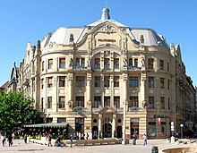
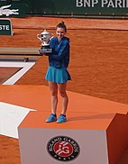

Culture
Arts and monuments

The topic of the origin of Romanian culture began to be discussed by the end of the 18th century among the Transylvanian School scholars.[404] Several writers rose to prominence in the 19th century, including: George Coșbuc, Ioan Slavici, Mihail Kogălniceanu, Vasile Alecsandri, Nicolae Bălcescu, Ion Luca Caragiale, Ion Creangă, and Mihai Eminescu, the later being considered the greatest and most influential Romanian poet, particularly for the poem Luceafărul.[405] In the 20th century, a number of Romanian artists and writers achieved international acclaim, including: Tristan Tzara, Marcel Janco,[406] Mircea Eliade, Nicolae Grigorescu, Marin Preda, Liviu Rebreanu,[407] Eugène Ionesco, Emil Cioran, and Constantin Brâncuși. Brâncuși has a sculptural ensemble in Târgu Jiu, while his sculpture Bird in Space, was auctioned in 2005 for $27.5 million.[408][409] Romanian-born Holocaust survivor Elie Wiesel received the Nobel Peace Prize in 1986, while Banat Swabian writer Herta Müller received the 2009 Nobel Prize in Literature.[410] Prominent Romanian painters include: Nicolae Grigorescu, Ștefan Luchian, Ion Andreescu Nicolae Tonitza, and Theodor Aman. Notable Romanian classical composers of the 19th and 20th centuries include: Ciprian Porumbescu, Anton Pann, Eduard Caudella, Mihail Jora, Dinu Lipatti, and especially George Enescu. The annual George Enescu Festival is held in Bucharest in honour of the 20th-century composer.[411] Contemporary musicians like Angela Gheorghiu, Gheorghe Zamfir,[412][413] Inna,[414] Alexandra Stan,[415] and many others have achieved various levels of international acclaim. At the Eurovision Song Contest Romanian singers achieved third place in 2005 and 2010.[416] In cinema, several movies of the Romanian New Wave have achieved international acclaim. At the Cannes Film Festival, The Death of Mr. Lazarescu by Cristi Puiu won the Prix Un Certain Regard in 2005,[417] while 4 Months, 3 Weeks and 2 Days by Cristian Mungiu won the festival's top prize, the Palme d'Or, in 2007.[418] At the Berlin International Film Festival, Child's Pose by Călin Peter Netzer won the Golden Bear in 2013.[419] The list of World Heritage Sites includes six cultural sites located within Romania, including eight painted churches of northern Moldavia, eight wooden churches of Maramureș, seven villages with fortified churches in Transylvania, the Horezu Monastery, and the Historic Centre of Sighișoara.[420] The city of Sibiu, with its Brukenthal National Museum, was selected as the 2007 European Capital of Culture and the 2019 European Region of Gastronomy.[421][422] Multiple castles exist in Romania, including the popular tourist attractions of Peleș Castle,[423] Corvin Castle, and Bran Castle or "Dracula's Castle".[424]
Sports
Football is the most popular sport in Romania with over 219,000 registered players as of 2018. The market for professional football in Romania is roughly €740 million according to UEFA.[439] The governing body is the Romanian Football Federation, which belongs to UEFA. The Romania national football team played its first match in 1922 and is one of only four national teams to have taken part in the first three FIFA World Cups, the other three being Brazil, France, and Belgium. Overall, it has played in seven World Cups and had its most successful period during the 1990s, when it finished 6th at the 1994 FIFA World Cup, eventually being ranked 3rd by FIFA in 1997.[440] The core player of this golden generation was Gheorghe Hagi, who was nicknamed "Maradona of the Carpathians".[441] Other successful players include the European Golden Shoe winners: Dudu Georgescu, Dorin Mateuț and Rodion Cămătaru, Nicolae Dobrin,[442] Ilie Balaci,[443] Florea Dumitrache,[444] Mihai Mocanu,[445] Michael Klein,[446] Mircea Rednic,[446] Cornel Dinu,[444] Mircea Lucescu,[447] Costică Ștefănescu,[448] Liță Dumitru,[449] Lajos Sătmăreanu,[450] Ștefan Sameș,[451] Ladislau Bölöni,[452] Anghel Iordănescu,[453] Miodrag Belodedici,[454] Helmuth Duckadam,[455] Marius Lăcătuș,[446] Victor Pițurcă[456] and many others, and most recently Gheorghe Popescu,[457] Florin Răducioiu,[458] Dorinel Munteanu,[459] Dan Petrescu,[460] Adrian Mutu,[461] Cristian Chivu,[461] or Cosmin Contra.[461] Romania's home ground is the Arena Națională in Bucharest. The most successful club is Steaua București, who were the first Eastern European team to win the Champions League in 1986, and were runners-up in 1989.[462] They were also Europa League semi-finalists in 2006.[463] Dinamo București reached the Champions League semi-final in 1984 and the Cup Winners' Cup semi-final in 1990.[464] Other important Romanian football clubs are Rapid București,[465] UTA Arad,[466] Universitatea Craiova,[467] Petrolul Ploiești,[468] CFR Cluj,[469] Astra Giurgiu[470] and Viitorul Constanța[471] (the latter having recently merged with FCV Farul Constanța).[472] Tennis is the second most popular sport.[473] Romania reached the Davis Cup finals three times in 1969, 1971 and 1972.[474] In singles, Ilie Năstase was the first year-end World Number 1 in the ATP Rankings in 1973, winning several Grand Slam titles. Also Virginia Ruzici won the French Open in 1978, and was runner-up in 1980, Simona Halep won the French Open in 2018 and Wimbledon in 2019 after losing her first three Grand Slam finals. She has ended 2017 and 2018 as WTA's World Number 1. And in doubles Horia Tecău won three Grand Slams and the ATP Finals final. He was World Number 2 in 2015.[475] The second most popular team sport is handball.[473] The men's team won the handball world championship in 1961, 1964, 1970, 1974 making them the third most successful nation ever in the tournament. The women's team won the world championship in 1962 and have enjoyed more success than their male counterparts in recent years. In the club competition Romanian teams have won the EHF Champions League a total of three times, Steaua București won in 1968 as well as 1977 and Dinamo București won in 1965. The most notable players include Ștefan Birtalan, Vasile Stîngă (all-time top scorer in the national team) and Gheorghe Gruia who was named the best player ever in 1992.[476] In present-day Cristina Neagu is the most notable player and has a record four IHF World Player of the Year awards.[477] In women's handball, powerhouse CSM București lifted the EHF Champions League trophy in 2016.[478] Popular individual sports include combat sports,[473] martial arts,[473] and swimming.[473] In professional boxing, Romania has produced many world champions across the weight divisions internationally recognised by governing bodies. World champions include Lucian Bute, Leonard Dorin Doroftei, Adrian Diaconu, and Michael Loewe.[479] Another popular combat sport is professional kickboxing, which has produced prominent practitioners including Daniel Ghiță,[480] and Benjamin Adegbuyi.[481] Romania's 306 all-time Summer Olympics medals would rank 12th most among all countries, while its 89 gold medals would be 14th most. The 1984 Summer Olympics was their most successful run, where they won 53 medals in total, 20 of them gold, ultimately placing 2nd to the hosts United States in the medal rankings. Amongst countries who have never hosted the event themselves, they are second in the total number of medals earned.[482] Gymnastics is the country's major medal-producing sport,[483] with Olympic and sport icon Nadia Comăneci becoming the first gymnast ever to score a perfect ten in an Olympic event at the 1976 Summer Olympics.[484] Other Romanian athletes who collected five gold medals like Comăneci are rowers Elisabeta Lipa (1984–2004) and Georgeta Damian (2000–2008).[485] The Romanian competitors have won gold medals in other Olympic sports: athletics, canoeing, wrestling, shooting, fencing, swimming, weightlifting, boxing, and judo.[486]